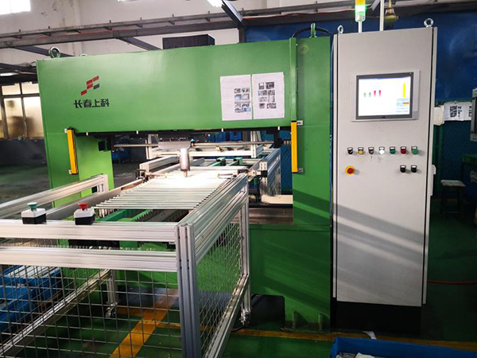

发布时间：2019-02-25 点击量：363
不知道大家对于数控液压校直机有多少了解，本文将主要为大家介绍一下关于该设备的主要系统构成。从其的应用情况来看，我们目前主要是使用该设备来完成铜丝等线材的拉拔和校直。数控液压校直机的电气传动部分主要包括牵伸电机、收线电机以及排线电机等。
此外，数控液压校直机设备还包括有一些其他的辅助部件，这部分主要包括的有张力架、定位轮、分线轮以及往复排线杆等。其中的牵伸电机主要是能够驱动伸线轮运转，在皮带的作用下，四级伸线轮能够实现金属拉伸，而收线电机则可以完成收卷。
那么，液压校直机系统构成究竟是什么样呢?首先，该设备中所使用的牵伸电机中应用的是变频器，而收卷电机则应用的是卷绕专用型变频器。这样一来，可以保证系统工作稳定可靠的运行下去。其次，在实际操作中，主机的运转指令和输出频率信号就属于运行指令和频率指令，从而达到同步运的效果。
在生产作业完成之后，要关停液压校直机的时候，如果满盘质量比较大的话，那么应当采用反方向制动，这样可以避免因惯性而导致断线。此外，在穿线作业中，该设备还具有点动功能。
液压校直机在运行的过程中，其主要结合摆杆输出的电压信号进行参考，从而进行内部可变补正控制。另外，在变频器的帮助下，该设备在卷绕曲线的时候，还可以预测图形运转的速度，从而确保以恒线速度收卷，满足工艺要求。